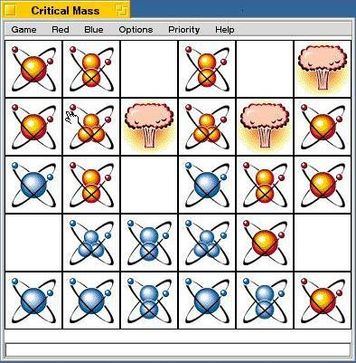

Critical Mass 2.0 By Hamish Carr and Adrien Destugues  Come and blow some things up! Index What's New Background Description Quick Start Interface Game Rules Strategy Revision History The Code Credits